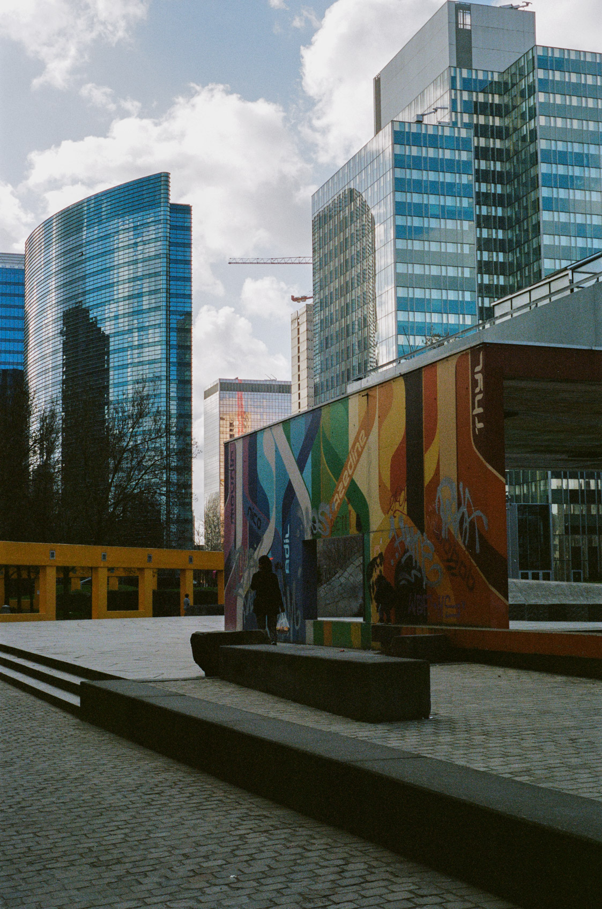

Photography
From architecture on film to portraits on my beloved Fuji xh-1. Photography forces me to look around and see opportunity in the mundane. The opportunity to capture something beautiful, something powerful or something emotional. Scroll down to discover more pics and don't hesitate to contact me if you're interested in collaborating. I'm always down for a shoot.

“Your first 10,000 photographs are your worst.”
~ Henri Cartier-Bresson